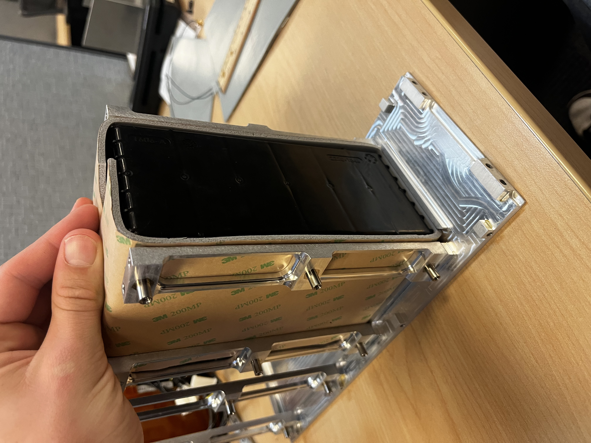
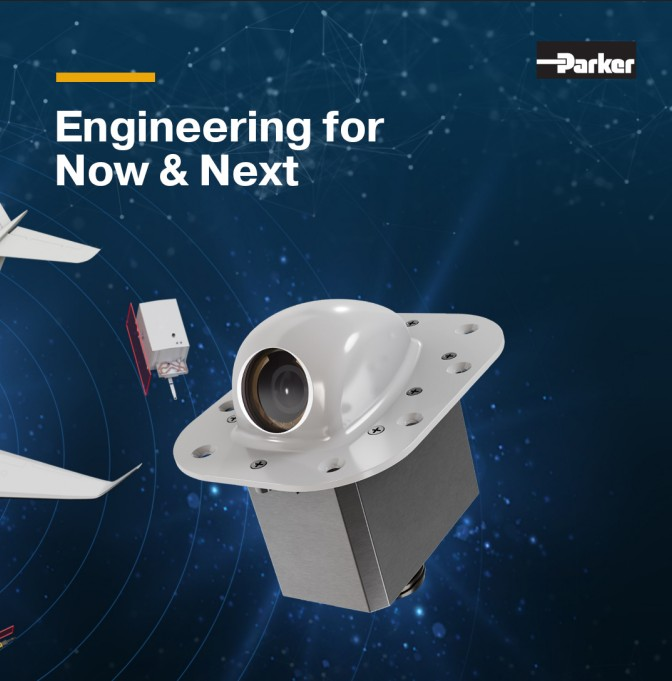

01 / OVERVIEW
Aerospace Engineering
I work as a Mechanical Engineering Intern at Parker Aerospace supporting the design, analysis, documentation, and production of aerospace camera systems.
My work spans mechanical design, engineering analysis, manufacturing support, sustaining engineering, and production-level engineering changes. I work closely with mechanical and electrical engineers, systems engineers, technicians, machinists, and vendors to move hardware from engineering concepts into production.
02 / MY ROLE
What I Do
Mechanical Design
Design and modify components and assemblies in SolidWorks while developing engineering drawings, applying GD&T, and evaluating tolerance requirements.
Engineering Analysis
Perform structural, vibration, and thermal analysis using ANSYS to evaluate hardware against applicable aerospace requirements and operating conditions.
Sustaining Engineering
Contribute to ongoing sustaining work to keep products on the shelf and prevent production line-down scenarios. Carry out engineering changes and update production-level drawings and documentation.
Manufacturing & Integration
Work directly with technicians, machinists, engineers, and vendors to evaluate manufacturability, assembly, hardware changes, and production requirements.
03 / SELECTED WORK
Engineering Projects
Emergency Battery Heater Blanket Redesign

Redesigned an aerospace battery heater blanket to improve manufacturability and assembly while addressing failure modes and reducing the potential for human error during installation.
Developed requirements, evaluated the existing design, created the redesigned hardware in SolidWorks, supported prototype development, and performed thermal analysis to evaluate the design.
PROJECTED ANNUAL SAVINGS: ~$200,000
Sustaining Engineering

Contributing to ongoing sustaining work to keep products on the shelf and prevent production line-down scenarios. Carrying out engineering change orders for production-level component changes while updating the associated engineering drawings and documentation.
Work packages are peer reviewed before customer submittal to ensure engineering changes are properly documented and controlled.
3rd Generation HD Camera
Contributing to the design, analysis, and production support of Parker Aerospace's 3rd Generation High-Definition Camera systems for aerospace applications
Designing and modifying components and assemblies in SolidWorks, developing engineering drawings, applying GD&T, performing tolerance stack-ups, and supporting structural, vibration, and thermal analysis in ANSYS. Working closely with engineers, technicians, machinists, and vendors to move designs into production..
04 / TOOLS & SKILLS